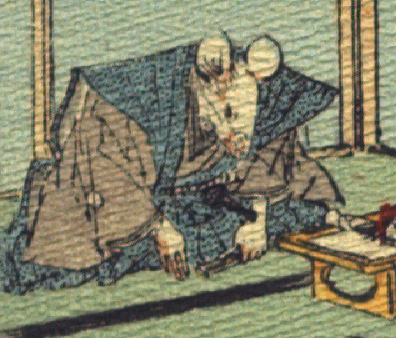

男の鼠。裃姿で、腰に刀を1本さしている。正座して、両手を前につき頭を下げている。左手に扇子を持っている。手は人間のものである。手前に、結納品を載せた台が置かれている。
著作者：J.Dautremer／出典：親書誌：U426_nichibunken_0111：Le mariage de la souris／日付：2006／資源識別子：U426_nichibunken_0111_0004_0001
Copyright (c)2010- International Research Center for Japanese Studies, Kyoto, Japan. All rights reserved.